Home
本示例显示如何在Volume Segmenter应用程序中分割体积。该Volume Segmenter应用程序提供了许多方法，探索在体积和分段体积对象。例如，您可以逐个切片或以 3-D 表示形式查看体积。要分割对象，您可以使用 ROI 绘图工具或画笔工具绘制感兴趣区域 (ROI)。本示例创建了一个二进制蒙版，用于分割大脑的一个小区域。
将体积数据加载到工作区
将体积加载到工作区中。此示例使用存储在 MAT 文件中的一堆 MRI 大脑图像vol_001.mat。
load(fullfile(toolboxdir('images'),'imdata',...
'BrainMRILabeled','images','vol_001.mat'));
此命令将尺寸是240×240×155，名为vol的变量加载到工作区中。
whos vol Name Size Bytes Class Attributes vol 240x240x155 17856000 uint16
开启Volume Segmenter
打开 Volume Segmenter 应用程序。单击MATLAB® 工具条上的Apps选项卡。在图像处理和计算机视觉部分，单击Volume Segmenter。
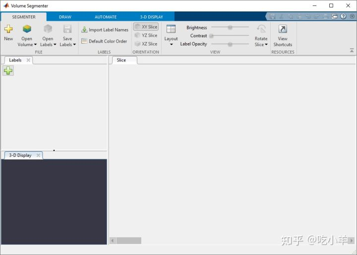
将体积加载到Volume Segmenter中
要在Volume Segmenter应用程序中加载体积，请单击应用程序工具条中的Open Volume。对于本示例，选择从工作区打开。在“导入体积”对话框中，选择您加载到工作区中的体积vol，然后单击“确定”。（您也可以在打开应用程序时使用以下volumeSegmenter命令指定体积：volumeSegmenter(vol)。）
Volume Segmenter应用程序在3-d显示切片窗格窗格内显示体积的3-d表示，并显示所述数据集的各个切片。
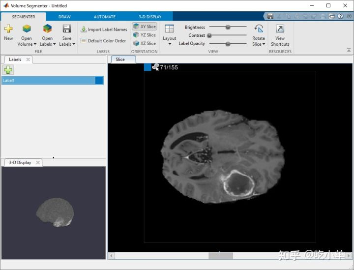
默认情况下，切片窗格显示数据的第一个切片。应用程序会在图像顶部显示切片的编号，例如 1/155。在这个数据集中，前几个切片不包含大脑的图像。
该应用程序还会使用默认名称为“标签”窗格中的分段自动创建标签Label1。您可以在标签窗格中定义多个标签。但是，要创建二进制蒙版，您必须只使用一个标签。
要更改标签名称，请双击标签名称。要更改与标签关联的颜色，请双击标签窗格中显示的颜色方块。您可以选择使用“打开标签”按钮将一组现有标签加载到应用程序中。
探索体积
要确定要分割的内容，请使用3-D 显示窗格和切片窗格浏览体积。
在3-D 显示窗格中，您可以使用鼠标旋转体积以从各个角度检查数据。您还可以在应用程序工具条的3-D 显示选项卡中自定义体积的显示。例如，如果您有描述体素相对大小的元数据，您可以在应用工具条的3-D 显示选项卡的空间参考部分中指定它。为了改善数据视图，您可以更改 3-D 显示中使用的背景颜色，修改显示的阈值和不透明度，并在显示中包含方向轴，如下图所示。借助脑部 MRI 数据，您可以看到要分割的颞叶中的肿瘤。
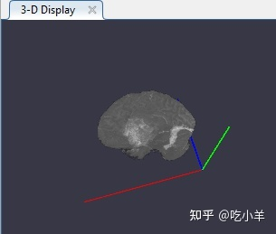
您还可以在“切片”窗格中查看体积的每个切片。使用窗格底部的滑块在切片之间移动。您可以在切片 35 到切片 88 上看到肿瘤。默认情况下，切片窗格显示沿 XY 轴定向的体积，但您可以使用分割器选项卡上工具条的方向部分中的按钮更改此设置。该切片窗格也是您使用绘图工具来定义的面具。
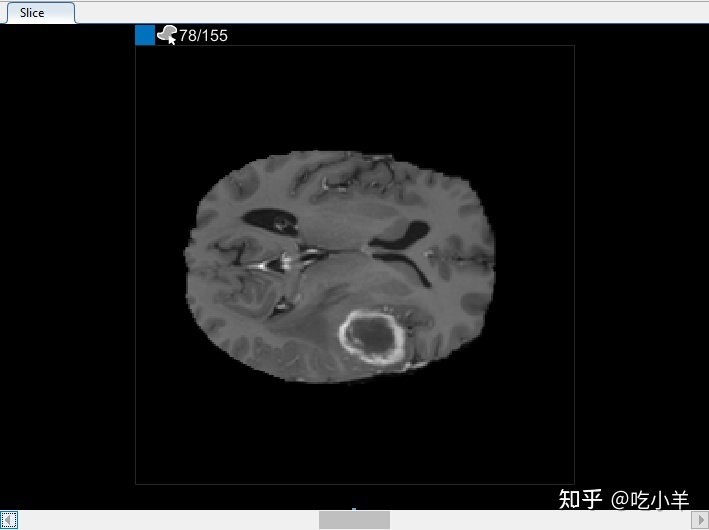
使用绘图工具定义蒙版
确定要分割的对象后，您可以使用应用程序工具条中“绘制”选项卡上的工具来定义区域。选择您想要从ROI工具使用绘图工具：徒手绘制，辅助徒手绘制和多边形，以及笔刷工具。
在切片窗格中，导航到对象第一次出现的切片，切片 35，然后在对象周围绘制轮廓。在本例中，使用多边形绘图工具。单击以创建顶点，然后移动光标并再次单击以创建第二个顶点，并用直线连接它们。继续此过程以创建连接线。要在完成绘制后添加其他顶点，请双击 ROI 边。
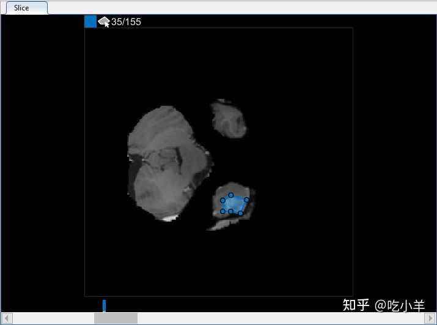
使用插值加速对象 ROI 创建
您可以逐个切片移动通过体积，并在对象出现的每个切片上绘制一个 ROI。但是，Volume Segmenter应用程序提供了多种自动插值工具，可以帮助跨切片对对象进行分割。
要使用插值，您必须首先在两个切片上手动定义区域。您已经在对象出现的第一个切片上定义了区域，切片 35。使用相同的过程在它出现的最后一个切片上定义区域，切片 88。应用程序在滑块顶部放置两个条，使用与标签关联的颜色，以指示具有 ROI 的切片。
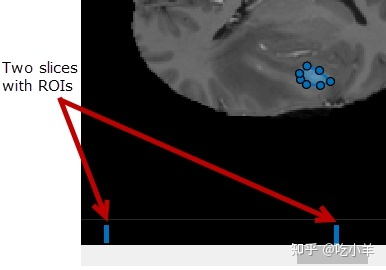
在两个切片上定义对象后，单击Auto Interpolate。该应用程序会自动定义所有中间幻灯片的ROI。该应用程序使用蓝色条来指示具有 ROI 的所有切片，现在它们看起来像从切片 35 到切片 88 的实心条。

或者，在两个切片上定义 ROI 后，您可以单击Manually Interpolate。使用此选项，应用程序将打开手动插值对话框。您选择要插入的两个区域，区域一和区域二。要选择第一个区域，请使用对话框底部的滑块导航到第一个带有 ROI 的切片，切片 35，然后在显示的 ROI 内单击。要选择第二个区域，请单击区域二，导航到幻灯片 88，然后在显示的 ROI 内单击。选择两个区域后，单击运行以在所有介入切片上插入 ROI。
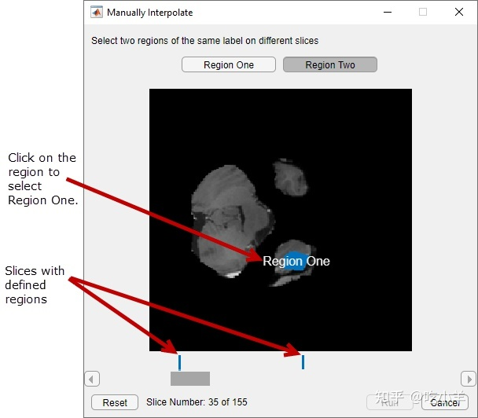
优化内插 ROI
使用插值后，检查单个切片以查看插值是否创建了令人满意的 ROI。请注意，切片 71 上的 ROI 并未填充您要分割的整个对象。您可以使用手动调节ROI笔刷工具。或者，您可以使用“自动化”选项卡上的工具之一。例如，您可以使用Active Contours在未填充肿瘤全尺寸的切片上增加 ROI。您还可以使用添加算法来指定您自己的算法来对 ROI 进行操作。
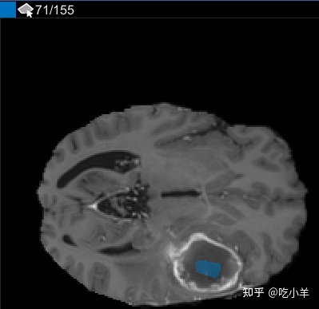
执行自定义处理
您也可以使用自己的算法来操作 ROI。在自动化选项卡上，单击添加算法。选择您希望处理是在每个 2-D 切片（基于切片）上还是在整个 3-D 体积（基于体积）上运行。
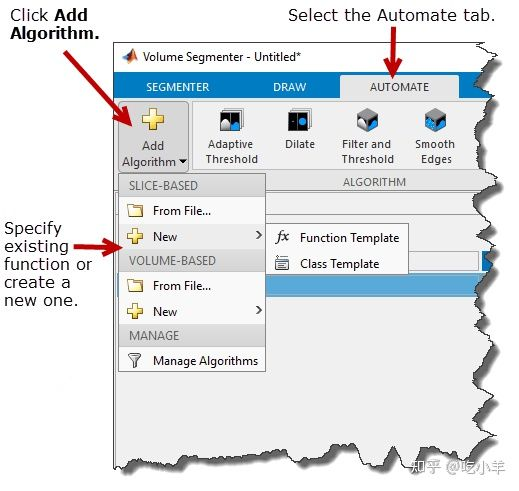
对于此示例，在基于切片下，选择新建选项并单击函数模板以创建一个对每个二维切片进行操作的新函数。该 App 在 MATLAB 编辑器中打开模板。将模板中的示例代码替换为您要使用的代码。您的函数必须接受两个参数：每个切片作为单独的图像和蒙版。您的函数还必须返回一个蒙版图像。
完成模板编辑后，保存文件。Volume Segmenter 应用程序会自动在“自动化”选项卡工具条中为您的函数创建一个按钮。要在一个切片上测试您的函数，请单击Run。默认情况下，应用程序仅将函数应用于当前切片。
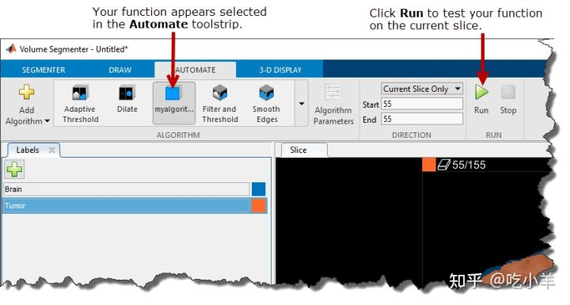
在单个切片上测试您的函数后，您可以在所有切片或切片的子集上运行它。您可以从当前切片运行到末尾（编号最高的切片）或从当前切片返回到开头（切片 1）。您还可以通过指定起始切片和结束切片来指定切片范围。
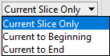
当您选择方向选项之一时，应用程序会更新显示中的切片编号。您可以使用此显示查看处理进度。
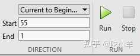
创建二进制蒙版体积
要创建二进制蒙版体积，请单击Segmenter选项卡上的Save Labels。您可以将封装保存到 MAT 文件或工作区变量。对于此示例，单击另存为工作区变量。在保存到工作区对话框中，指定是否要将分段保存为逻辑蒙版或分类蒙版。选择逻辑（只有一个标签时的默认值），为变量命名为my_mask_volume，然后单击确定。该应用程序创建了一个与原始体积具有相同尺寸的logical类的 3-D体积。
要查看蒙版，请使用volshow函数： volshow(my_mask_volume);。
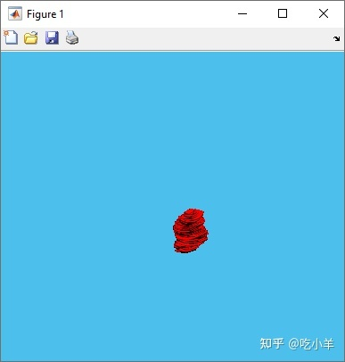
======================================================================
我的测试结果及程序
下面是我测试的代码：

注：本文根据MATLAB官网内容修改而成。